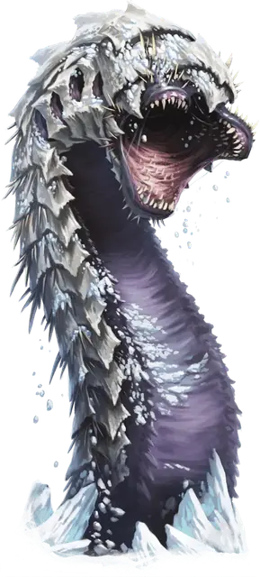

Ледяной червь
Frost Worm
Громадный Монстр, без мировоззрения

Класс Доспеха 18 (природный доспех)
Хиты 264 (16к20 + 96)
Скорость 40 футов, копая 30 футов
| мод | спас | ||
|---|---|---|---|
| СИЛ | 28 | +9 | +9 |
| ЛОВ | 8 | −1 | −1 |
| ТЕЛ | 22 | +6 | +12 |
| мод | спас | ||
|---|---|---|---|
| ИНТ | 1 | −5 | −5 |
| МДР | 5 | −3 | +3 |
| ХАР | 5 | −3 | −3 |
Уязвимость к урону огонь
Иммунитет к урону холод
Чувства слепое зрение 30 футов, пассивное Восприятие 7, чувство вибрации 60 футов
Опасность 17 (18000 опыта)
Бонус мастерства +6
Особенности
Предсмертная вспышка. Когда червь умирает, он разрывается взрывом холодной энергии. Каждое существо в пределах 60 футов от него должно совершить спасбросок Ловкости Сл 20, получая 28 (8к6) урона холодом при провале или половину этого урона при успехе. Существа находящиеся внутри червя, когда он умирает, автоматически проваливают этот спасбросок.
Замороженное тело. Существо, которое касается червя или попадает по нему рукопашной атакой, находясь в пределах 5 футов от него, получает 10 (3к6) урона холодом.
Прокладывание туннеля. Червь может копать сквозь сплошной камень со скоростью копания, уменьшенной вдвое, оставляя за собой туннель диаметром 10 футов.
Действия
Мультиатака. Червь совершает две атаки укусом или использует Трель и совершает атаку Укусом.
Укус. . Рукопашная атака оружием: +15 к попаданию, досягаемость 10 футов, одна цель. Попадание: 22 (3к8 + 9) колющего урона плюс 10 (3к6) урона холодом. Если цель — существо Большого размера или меньше, она должна преуспеть в спасброске Ловкости Сл 20, иначе будет проглочено. Проглоченное существо ослеплено и опутано, у него полное укрытие от атак и прочих эффектов, происходящих извне червя, и оно получает урон кислотой 10 (3к6) и 10 (3к6) урона холодом в начале каждого хода червя.
Если червь получает 30 или больше урона за один ход от существа, находящегося внутри его, червь должен в конце этого хода преуспеть в спасброске Телосложения Сл 20, иначе он отрыгнет всех проглоченных существ, которые падают ничком в пространстве в пределах 10 футов от червя.
Трель. Ледяной червь издает пронзительный визг. Каждое существо в пределах 60 футов от червя, которое может его слышать, должно совершить спасбросок Мудрости Сл 20, иначе станет ошеломлённым на 1 минуту. Существо может повторять спасбросок каждый раз, когда оно получает урон, и в конце каждого своего хода, оканчивая на себя эффект в случае успеха. Как только существо преуспевает в спасброске от этого эффекта или если этот эффект для него заканчивается, это существо становится невосприимчивым к Трели всех ледяных червей в течение следующих 24 часов. Ледяные черви невосприимчивы к этому эффекту.
Описание
Ледяные черви роют норы в снегу, грязи, льду и камнях Кусачего Севера Дикогорья. Эти огромные чудовища жадно поглощают любое живое существо, которое могут обхватить своими челюстями.
Ледяной червь проводит большую часть своего времени под мерзлой землей, экономя энергию, ожидая, когда добыча пройдет над головой. Умные путешественники могут определить охотничьи угодья ледяного червя, посмотрев на недавно покрытые льдом туннели. Когда червь чувствует вибрации наверху, он прорывается сквозь грязь, лед и снег. Те, кто избежал его первоначального нападения, все еще должны бороться с навязчивой трелью червя — гипнотизирующим призывом, который останавливает существ на их пути, чтобы сделать их легкой добычей.